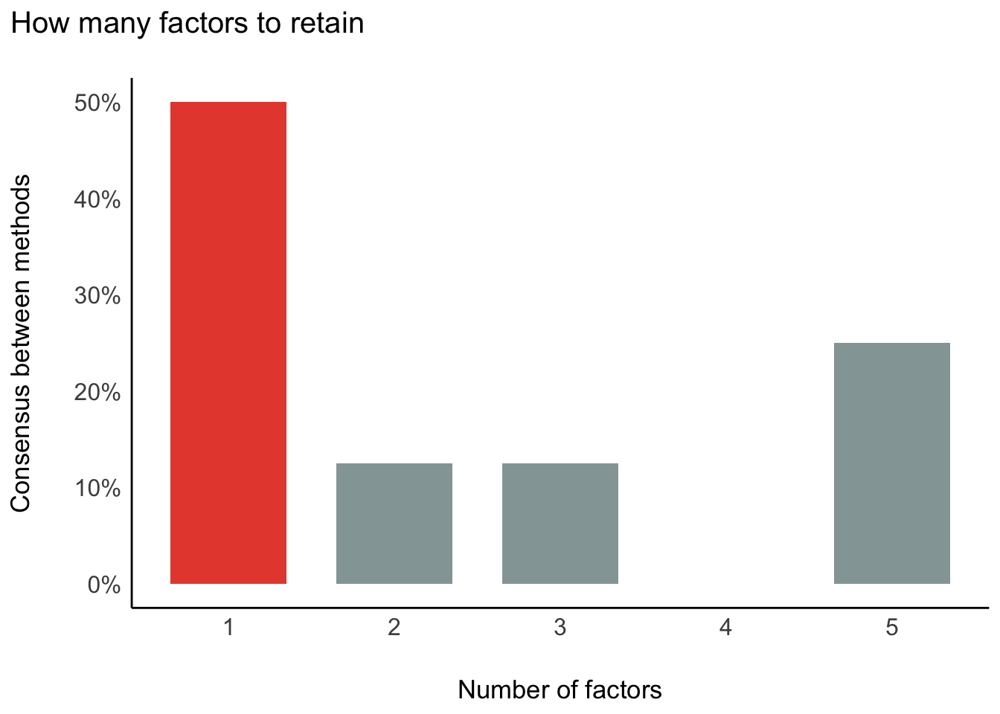
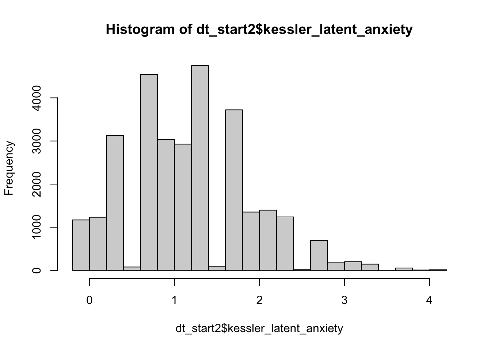
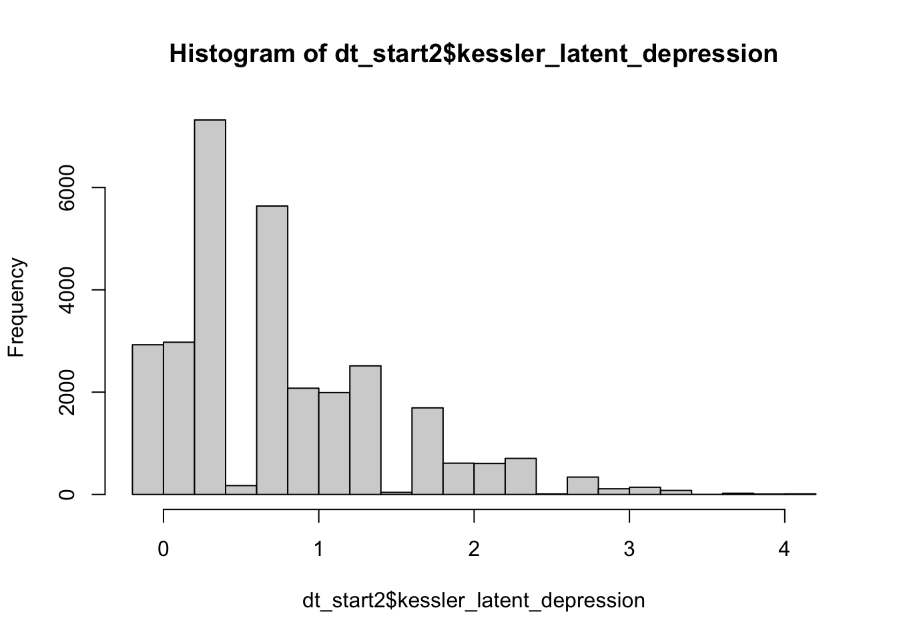

Today we will do an analysis, proceeding in a step-by-step way.
Recall our checklist:
Stating the Question: Is my question clearly stated? If not, state it.
Relevance of the Question: Have I explained its importance? If not, explain.
Causality of the Question: Is my question causal? If not, refine your question.
Subgroup Analysis: Does my question involve a subgroup (e.g., cultural group)? If not, develop a subgroup analysis question.
Questions
Question 1. Does exercise affect anxiety/depression?
Question 2: Do these effects vary among NZ Europeans and Māori?
Are these questions clearly stated? No, they are vague:
How much exercise?
By which measures of depression?
When should the effects be observed?
Recall we can help to clarify these questions by attempting to emulate an experiment.
We shall use the measure of exercise in the NZAVS: hours of activity per week (we shall see, the question remains vague).
We will assess the 1-year effect on Kessler-6 depression after initiating a change in exercise (intention-to-treat).
We will investigate effect-modification by NZ European and Māori ethnic identification.
Preliminaries: source functions, import data.
We source our functions, load libraries, and important our (synthetic) data.
Code
# PSYCH 434: Example script for assessment 3 and 5.# Before running this source code, make sure to update to the current version of R, and to update all existing packages.# WARNING: COMMENT THIS OUT. JB DOES THIS FOR WORKING WITHOUT WIFIsource("/Users/joseph/GIT/templates/functions/libs2.R")# WARNING: COMMENT THIS OUT. JB DOES THIS FOR WORKING WITHOUT WIFIsource("/Users/joseph/GIT/templates/functions/funs.R")# WARNING: COMMENT THIS OUT. JB DOES THIS FOR WORKING WITHOUT WIFIsource("/Users/joseph/GIT/templates/functions/experimental_funs.R")############## ############## ############## ############## ############## ############## ############## ################# ############## ############## IMPORT DATA ############## ############## ############## ############################ ############## ############## ############## ############## ############## ############## ######### If you haven't already, you should have created a folder called "data", in your Rstudio project. If not, download this file, add it to your the folder called "data" in your Rstudio project. # "https://www.dropbox.com/s/vwqijg4ha17hbs1/nzavs_dat_synth_t10_t12?dl=0"# A function we will use for our tables. tab_ate_subgroup_rd <-function(x, new_name,delta =1,sd =1) {# Check if required packages are installed required_packages <-c("EValue", "dplyr") new_packages <- required_packages[!(required_packages %in%installed.packages()[, "Package"])]if (length(new_packages))stop("Missing packages: ", paste(new_packages, collapse =", "))require(EValue)require(dplyr)# check if input data is a dataframeif (!is.data.frame(x))stop("Input x must be a dataframe")# Check if required columns are in the dataframe required_cols <-c("estimate", "lower_ci", "upper_ci") missing_cols <- required_cols[!(required_cols %in%colnames(x))]if (length(missing_cols) >0)stop("Missing columns in dataframe: ",paste(missing_cols, collapse =", "))# Check if lower_ci and upper_ci do not contain NA valuesif (any(is.na(x$lower_ci), is.na(x$upper_ci)))stop("Columns 'lower_ci' and 'upper_ci' should not contain NA values") x <- x %>% dplyr::mutate(across(where(is.numeric), round, digits =3)) %>% dplyr::rename("E[Y(1)]-E[Y(0)]"= estimate) x$standard_error <-abs(x$lower_ci - x$upper_ci) /3.92 evalues_list <-lapply(seq_len(nrow(x)), function(i) { row_evalue <- EValue::evalues.OLS( x[i, "E[Y(1)]-E[Y(0)]"],se = x[i, "standard_error"],sd = sd,delta = delta,true =0 )# If E_value is NA, set it to 1if (is.na(row_evalue[2, "lower"])) { row_evalue[2, "lower"] <-1 }if (is.na(row_evalue[2, "upper"])) { row_evalue[2, "upper"] <-1 }data.frame(round(as.data.frame(row_evalue)[2,], 3)) # exclude the NA column }) evalues_df <-do.call(rbind, evalues_list)colnames(evalues_df) <-c("E_Value", "E_Val_bound") tab_p <-cbind(x, evalues_df) tab <- tab_p |>select(c("E[Y(1)]-E[Y(0)]","lower_ci","upper_ci","E_Value","E_Val_bound" ))return(tab)}
Code
# This will read the synthetic data into Rstudio. Note that the arrow package allows us to have lower memory demands in the storage and retrieval of data.nzavs_synth <- arrow::read_parquet(here::here("data", "nzavs_dat_synth_t10_t12"))
Next, we will inspect column names.
Make sure to familiarise your self with the variable names here
It’s a good idea to plot the data
Data Wrangling.
Next, we’ll get the data into shape.
Consider the following causal questions: “Does exercise affect well-being?” “Do such effects, if they exist, differ by ethnicity?”
These questions are not precise. What type of excercise? How regularly must one exercise? For how long must one exercise? Which ethnicities shall we compare? Why?
It helpst to think like an experimentalist… (say more)
In this exampe, we’ll do the following:
Create a Kessler 6 average score
Create a Kessler 6 sum score
Create a Kessler 6 binary score (Not Depressed vs. Moderately or Severely Depressed)
Create a log Exercise score
Create a coarsened Exercise score.
Consider: the NZAVS asks participants the following question. During the past week, list “Hours spent exercising/physical activity.” The question is inherently unclear about what sort of physical activity someone is doing. When participants respond to this question, what do they mean? John considers anything that is not sleep to be physical activity. He returns a high number. Jane only counts aerobic exercise. For Jane, walking an hour to work and back doesn’t count.
Recall that an assumption of causal inference is consistency. (Say more … then leave to the side.)
For now, let’s create the indicators.
Code
# create sum score of kessler 6dt_start <- nzavs_synth %>%arrange(id, wave) %>%rowwise() %>%mutate(kessler_6 =mean(sum(# Specify the Kessler scale itemsc( kessler_depressed,# During the last 30 days, how often did you feel so depressed that nothing could cheer you up? kessler_hopeless,# During the last 30 days, how often did you feel hopeless? kessler_nervous,# During the last 30 days, how often did you feel nervous? kessler_effort,# During the last 30 days, how often did you feel that everything was an effort? kessler_restless,# During the last 30 days, how often did you feel restless or fidgety ? kessler_worthless # During the last 30 days, how often did you feel worthless? )))) |>mutate(kessler_6_sum =round(sum(c (kessler_depressed, kessler_hopeless, kessler_nervous, kessler_effort, kessler_restless, kessler_worthless)),digits =0 )) |>ungroup() |># Create a categorical variable 'kessler_6_coarsen' based on the sum of Kessler scale itemsmutate(kessler_6_coarsen =cut( kessler_6_sum,breaks =c(0, 5, 24),labels =c("not_depressed","mildly_to_severely_depressed"),include.lowest =TRUE,include.highest =TRUE,na.rm =TRUE,right =FALSE ) ) |># Transform 'hours_exercise' by applying the log function to compress its scalemutate(hours_exercise_log =log(hours_exercise +1)) |># Add 1 to avoid undefined log(0). Hours spent exercising/physical activity# Coarsen 'hours_exercise' into categoriesmutate(hours_exercise_coarsen =cut( hours_exercise,# Hours spent exercising/ physical activitybreaks =c(-1, 3, 8, 200),labels =c("inactive","active","very_active" ),# Define thresholds for categorieslevels =c("(-1,2]", "(2,8]", "(8,200]"),ordered =TRUE ) ) |># Create a binary 'urban' variable based on the 'rural_gch2018' variablemutate(urban =factor(ifelse( rural_gch2018 =="medium_urban_accessibility"|# Define urban condition rural_gch2018 =="high_urban_accessibility","urban",# Label 'urban' if condition is met"rural"# Label 'rural' if condition is not met ) ))
We next do some data checks. I will leave you to do these in your own time.
Code
# do some checkslevels(dt_start$hours_exercise_coarsen)table(dt_start$hours_exercise_coarsen)max( dt_start$hours_exercise)min( dt_start$hours_exercise)# checkstable(is.na(dt_start$kessler_6_coarsen))table(is.na(dt_start$hours_exercise_coarsen))# justification for transforming exercise" has a very long tailhist(dt_start$hours_exercise, breaks =1000)# consider only those cases below < or = to 20hist(subset(dt_start, hours_exercise <=20)$hours_exercise)# inspect kessler 6table(dt_start$kessler_6_coarsen)table(dt_start$hours_exercise_coarsen)hist( as.numeric(dt_start$kessler_6_coarsen) )hist( as.numeric(dt_start$hours_exercise_coarsen))
CFA for Kessler 6
We have learned how to do confirmatory factor analysis. Let’s put this knowledge to use, and consider whether Kessler 6 is one variable.
The code below will:
Load required packages.
Select the Kessler 6 items
Check whether there is sufficient correlation among the variables to support factor analysis.
Code
# Suppose we have reason to think Kessler 6 isn't one thing.# Let's put our factor analysis skills to work# Here we will use the paramters and see packages for R (part of the Easystats suite)# for efa/cfaif (!require(psych)) {install.packages("psych")library("psych")}
Loading required package: psych
Code
# for reportingif (!require(parameters)) {install.packages("parameters")library("parameters")}# for graphingif (!require(see)) {install.packages("see")library("see")}
Loading required package: see
Code
# for graphingif (!require(lavaan)) {install.packages("lavaan")library("lavaan")}
Loading required package: lavaan
This is lavaan 0.6-16
lavaan is FREE software! Please report any bugs.
Code
# for graphingif (!require(datawizard)) {install.packages("datawizard")library("datawizard")}
Loading required package: datawizard
Code
# select the columns we need. dt_only_k6 <- dt_start |>select(kessler_depressed, kessler_effort,kessler_hopeless, kessler_worthless, kessler_nervous, kessler_restless)# check factor structureperformance::check_factorstructure(dt_only_k6)
# Is the data suitable for Factor Analysis?
- Sphericity: Bartlett's test of sphericity suggests that there is sufficient significant correlation in the data for factor analysis (Chisq(15) = 70564.23, p < .001).
- KMO: The Kaiser, Meyer, Olkin (KMO) overall measure of sampling adequacy suggests that data seems appropriate for factor analysis (KMO = 0.86). The individual KMO scores are: kessler_depressed (0.83), kessler_effort (0.89), kessler_hopeless (0.85), kessler_worthless (0.85), kessler_nervous (0.88), kessler_restless (0.85).
The code below will allow us to explore the factor structure, on the assumption of n = 3 factors.
Code
# exploratory factor analysis# explore a factor structure made of 3 latent variablesefa <- psych::fa(dt_only_k6, nfactors =3) %>%model_parameters(sort =TRUE, threshold ="max")
Loading required namespace: GPArotation
Code
efa
# Rotated loadings from Factor Analysis (oblimin-rotation)
Variable | MR1 | MR2 | MR3 | Complexity | Uniqueness
----------------------------------------------------------------
kessler_depressed | 0.85 | | | 1.01 | 0.33
kessler_worthless | 0.79 | | | 1.00 | 0.35
kessler_hopeless | 0.75 | | | 1.02 | 0.33
kessler_nervous | | 1.00 | | 1.00 | 5.00e-03
kessler_restless | | | 0.69 | 1.02 | 0.52
kessler_effort | | | 0.48 | 1.66 | 0.50
The 3 latent factors (oblimin rotation) accounted for 66.05% of the total variance of the original data (MR1 = 35.14%, MR2 = 17.17%, MR3 = 13.73%).
Code
# This output presents the results of an exploratory factor analysis (EFA), a statistical method used to discover the underlying structure of a relatively large set of variables. It's often used when you don't have a specific hypothesis about what latent factors (unobservable variables) might be influencing the observed variables in your dataset.## In this analysis, we've requested three factors (latent variables), and the table presents the loadings of each observed variable on each of these factors. The loadings can be interpreted as the correlations between the observed variables and the latent factors.## Here's how to interpret the output:## The variables kessler_depressed, kessler_worthless, and kessler_hopeless load strongly on the first latent factor (MR1), and do not significantly load on the other two. This suggests that these three variables share some common underlying factor.## The variable kessler_nervous loads exclusively on the second latent factor (MR2), suggesting it might represent a different latent construct.## The variables kessler_restless and kessler_effort load on the third latent factor (MR3), which could represent yet another underlying construct.## The "Complexity" column indicates the complexity of each item. Complexity 1 indicates that the item is influenced mostly by a single factor.## The "Uniqueness" column represents the proportion of variance in each variable that is not explained by the factors. For example, the uniqueness of kessler_depressed is 0.33, which means that 33% of the variance in this variable is not accounted for by the three factors.## Lastly, the total variance explained by the three latent factors is 66.05%, with MR1 explaining 35.14%, MR2 explaining 17.17%, and MR3 explaining 13.73%. This indicates that about two-thirds of the variance in the six observed variables can be explained by the three latent factors extracted in the analysis.# fa -- there is no agreed method!# method of agreement:
Code
n <-n_factors(dt_only_k6)# # summary# as.data.frame(n)# plot of smmaryplot(n) +theme_modern()

Code
## CFA
Next try a CFA
Code
# first partition the data part_data <- datawizard::data_partition(dt_only_k6, traing_proportion = .07, seed =123)training <- part_data$p_0.7test <- part_data$test
Code
#|label: cfa_all# one factorstructure_k6_one <- psych::fa(training, nfactors =1) |>efa_to_cfa()# two factor modelstructure_k6_two <- psych::fa(training, nfactors =2) |>efa_to_cfa()# three structure modelstructure_k6_three <- psych::fa(training, nfactors =3) %>%efa_to_cfa()# inspect modelsstructure_k6_one
# fit and compare modelsone_latent <-suppressWarnings(lavaan::cfa(structure_k6_one, data = test))two_latents <-suppressWarnings(lavaan::cfa(structure_k6_two, data = test))three_latents <-suppressWarnings(lavaan::cfa(structure_k6_three, data = test))compare <- performance::compare_performance(one_latent, two_latents, three_latents, verbose =FALSE)# view as html tableas.data.frame(compare)|>kbl(format ="markdown")
Name
Model
Chi2
Chi2_df
p_Chi2
Baseline
Baseline_df
p_Baseline
GFI
AGFI
NFI
NNFI
CFI
RMSEA
RMSEA_CI_low
RMSEA_CI_high
p_RMSEA
RMR
SRMR
RFI
PNFI
IFI
RNI
Loglikelihood
AIC
AIC_wt
BIC
BIC_wt
BIC_adjusted
one_latent
lavaan
1359.7168
14
0
159746.19
21
0
0.9533955
0.9067909
0.9914883
0.9873622
0.9915748
0.1033455
0.0987385
0.1080285
0.0000000
36.00334
0.0493327
0.9872324
0.6609922
0.9915752
0.9915748
-151483.7
302995.3
0
303094.8
0
303050.3
two_latents
lavaan
317.9709
13
0
30915.75
21
0
0.9900793
0.9786322
0.9897149
0.9840541
0.9901287
0.0510548
0.0462789
0.0559908
0.3499758
36.31236
0.0226983
0.9833856
0.6126807
0.9901313
0.9901287
-150962.8
301955.6
1
302062.2
1
302014.5
three_latents
lavaan
747.8723
12
0
20903.30
21
0
0.9763317
0.9447739
0.9642223
0.9383317
0.9647609
0.0825447
0.0775761
0.0876237
0.0000000
37.13824
0.0377955
0.9373890
0.5509842
0.9647761
0.9647609
-151177.7
302387.5
0
302501.2
0
302450.3
This table provides the results of three different Confirmatory Factor Analysis (CFA) models: one that specifies a single latent factor, one that specifies two latent factors, and one that specifies three latent factors. The results include a number of goodness-of-fit statistics, which can be used to assess how well each model fits the data.
One_latent Model: This model assumes that there is only one underlying latent factor contributing to all variables. This model has a chi-square statistic of 1359.7 with 14 degrees of freedom, which is highly significant (p<0.001), indicating a poor fit of the model to the data. Other goodness-of-fit indices like GFI, AGFI, NFI, NNFI, and CFI are all high (above 0.9), generally indicating good fit, but these indices can be misleading in the presence of large sample sizes. RMSEA is above 0.1 which indicates a poor fit. The SRMR is less than 0.08 which suggests a good fit, but given the high Chi-square and RMSEA values, we can’t solely rely on this index. The Akaike information criterion (AIC), Bayesian information criterion (BIC) and adjusted BIC are used for comparing models, with lower values indicating better fit.
Two_latents Model: This model assumes that there are two underlying latent factors. The chi-square statistic is lower than the one-factor model (317.97 with 13 df), suggesting a better fit. The p-value is still less than 0.05, indicating a statistically significant chi-square, which typically suggests a poor fit. However, all other fit indices (GFI, AGFI, NFI, NNFI, and CFI) are above 0.9 and the RMSEA is 0.051, which generally indicate good fit. The SRMR is also less than 0.08 which suggests a good fit. This model has the lowest AIC and BIC values among the three models, indicating the best fit according to these criteria.
Three_latents Model: This model assumes three underlying latent factors. The chi-square statistic is 747.87 with 12 df, higher than the two-factor model, suggesting a worse fit to the data. Other fit indices such as GFI, AGFI, NFI, NNFI, and CFI are below 0.97 and the RMSEA is 0.083, which generally indicate acceptable but not excellent fit. The SRMR is less than 0.08 which suggests a good fit. The AIC and BIC values are higher than the two-factor model but lower than the one-factor model, indicating a fit that is better than the one-factor model but worse than the two-factor model.
Based on these results, the two-latents model seems to provide the best fit to the data among the three models, according to most of the fit indices and the AIC and BIC. Note, all models have significant chi-square statistics, which suggests some degree of misfit. It’s also important to consider the substantive interpretation of the factors, to make sure the model makes sense theoretically.
Try with multiple groups
Code
# select the columns we need + ethnicitydt_eth_k6_eth <- dt_start |>filter(eth_cat =="euro"| eth_cat =="maori") |>select(kessler_depressed, kessler_effort,kessler_hopeless, kessler_worthless, kessler_nervous, kessler_restless, eth_cat)# remove ethnicity for traning data # first partition the data part_data_eth <- datawizard::data_partition(dt_eth_k6_eth, traing_proportion = .07, seed =123, group ="eth_cat")training_eth <- part_data_eth$p_0.7test_eth <- part_data_eth$test# fit and compare models for configural equivalenceone_latent_eth_configural <-suppressWarnings(lavaan::cfa(structure_k6_one, group ="eth_cat", data = test_eth))two_latents_eth_configural <-suppressWarnings(lavaan::cfa(structure_k6_two, group ="eth_cat", data = test_eth))three_latents_eth_configural <-suppressWarnings(lavaan::cfa(structure_k6_three, group ="eth_cat", data = test_eth))compare_eth_configural <- performance::compare_performance(one_latent_eth_configural, two_latents_eth_configural, three_latents_eth_configural, verbose =FALSE)# fit and compare models for metric equivalenceone_latent_eth_metric <-suppressWarnings(lavaan::cfa(structure_k6_one, group ="eth_cat", group.equal ="loadings", data = test_eth))two_latents_eth_metric <-suppressWarnings(lavaan::cfa(structure_k6_two, group ="eth_cat", group.equal ="loadings", data = test_eth))three_latents_eth_metric <-suppressWarnings(lavaan::cfa(structure_k6_three, group ="eth_cat",group.equal ="loadings", data = test_eth))compare_eth_metric <- performance::compare_performance(one_latent_eth_metric, two_latents_eth_metric, three_latents_eth_metric, verbose =FALSE)# fit and compare models for scalar equivalenceone_latent_eth_scalar <-suppressWarnings(lavaan::cfa(structure_k6_one, group ="eth_cat", group.equal =c("loadings","intercepts"), data = test_eth))two_latents_eth_scalar <-suppressWarnings(lavaan::cfa(structure_k6_two, group ="eth_cat", group.equal =c("loadings","intercepts"), data = test_eth))three_latents_eth_scalar <-suppressWarnings(lavaan::cfa(structure_k6_three, group ="eth_cat",group.equal =c("loadings","intercepts"), data = test_eth))compare_eth_scalar <- performance::compare_performance(one_latent_eth_scalar, two_latents_eth_scalar, three_latents_eth_scalar, verbose =FALSE)
Recall, in the context of measurement and factor analysis, the concepts of configural, metric, and scalar invariance relate to the comparability of a measurement instrument, such as a survey or test, across different groups.
We saw in part 1 of this course that these invariance concepts are frequently tested in the context of cross-cultural, multi-group, or longitudinal studies.
Let’s first define these concepts, and then apply them to the context of the Kessler 6 (K6) Distress Scale used among Maori and New Zealand Europeans.
Configural invariance refers to the most basic level of measurement invariance, and it is established when the same pattern of factor loadings and structure is observed across groups. This means that the underlying constructs (factors) are defined the same way for different groups. This doesn’t mean the strength of relationship between items and factors (loadings) or the item means (intercepts) are the same, just that the items relate to the same factors in all groups.
In the context of the K6 Distress Scale, configural invariance would suggest that the same six items are measuring the construct of psychological distress in the same way for both Māori and New Zealand Europeans, even though the strength of the relationship between the items and the construct (distress), or the average scores, might differ.
Metric invariance (also known as “weak invariance”) refers to the assumption that factor loadings are equivalent across groups, meaning that the relationship or association between the measured items and their underlying factor is the same in all groups. This is important when comparing the strength of relationships with other variables across groups.
If metric invariance holds for the K6 Distress Scale, this would mean that a unit change in the latent distress factor would correspond to the same change in each item score (e.g., feeling nervous, hopeless, restless, etc.) for both Māori and New Zealand Europeans.
Scalar invariance (also known as “strong invariance”) involves equivalence of both factor loadings and intercepts (item means) across groups. This means that not only are the relationships between the items and the factors the same across groups (as with metric invariance), but also the zero-points or origins of the scales are the same. Scalar invariance is necessary when one wants to compare latent mean scores across groups.
In the context of the K6 Distress Scale, if scalar invariance holds, it would mean that a specific score on the scale would correspond to the same level of the underlying distress factor for both Māori and New Zealand Europeans. It would mean that the groups do not differ systematically in how they interpret and respond to the items. If this holds, one can make meaningful comparisons of distress level between Maori and New Zealand Europeans based on the scale scores.
Note: each of these levels of invariance is a progressively stricter test of the equivalence of the measurement instrument across groups. Demonstrating scalar invariance, for example, also demonstrates configural and metric invariance. On the other hand, failure to demonstrate metric invariance means that scalar invariance also does not hold. These tests are therefore usually conducted in sequence. The results of these tests should be considered when comparing group means or examining the relationship between a scale and other variables across groups.
The table represents the comparison of three multi-group confirmatory factor analysis (CFA) models conducted to test for configural invariance across different ethnic categories (eth_cat). Configural invariance refers to whether the pattern of factor loadings is the same across groups. It’s the most basic form of measurement invariance.
Looking at the results, we can draw the following conclusions:
Chi2 (Chi-square): A lower value suggests a better model fit. In this case, the two_latents_eth_configural model exhibits the lowest Chi2 value, suggesting it has the best fit according to this metric.
GFI (Goodness of Fit Index) and AGFI (Adjusted Goodness of Fit Index): These values range from 0 to 1, with values closer to 1 suggesting a better fit. The two_latents_eth_configural model has the highest GFI and AGFI values, indicating it is the best fit according to these indices.
NFI (Normed Fit Index), NNFI (Non-Normed Fit Index, also called TLI), CFI (Comparative Fit Index): These range from 0 to 1, with values closer to 1 suggesting a better fit. The one_latent_eth_configural model has the highest values, suggesting it is the best fit according to these metrics.
RMSEA (Root Mean Square Error of Approximation): Lower values are better, with values below 0.05 considered good and up to 0.08 considered acceptable. In this table, the two_latents_eth_configural model has an RMSEA of 0.05, which falls within the acceptable range.
RMR (Root Mean Square Residual) and SRMR (Standardized Root Mean Square Residual): Lower values are better, typically less than 0.08 is considered a good fit. All models exhibit acceptable RMR and SRMR values, with the two_latents_eth_configural model having the lowest.
RFI (Relative Fit Index), PNFI (Parsimonious Normed Fit Index), IFI (Incremental Fit Index), RNI (Relative Noncentrality Index): These range from 0 to 1, with values closer to 1 suggesting a better fit. The one_latent_eth_configural model has the highest values, suggesting the best fit according to these measures.
AIC (Akaike Information Criterion) and BIC (Bayesian Information Criterion): Lower values indicate a better fit when comparing models. The two_latents_eth_configural model has the lowest AIC and BIC, suggesting it is the best fit according to these criteria.
p_Chi2 and p_RMSEA: These are the significance levels for the Chi-square test and the RMSEA, respectively. Non-significant values (p > 0.05) suggest a good fit. Only the RMSEA for the two_latents_eth_configural model is non-significant, suggesting a good fit.
Overall, the two_latents_eth_configural model appears to provide the best fit across multiple indices, suggesting configural invariance (i.e., the same general factor structure) across ethnic categories with a two-factor solution. As with the previous assessment, theoretical soundness and other substantive considerations should also be taken into account when deciding on the final model.
This table presents the results of a multi-group confirmatory factor analysis (CFA) conducted to test metric equivalence (also known as measurement invariance) across different ethnic categories (eth_cat). The models (one_latent_eth_metric, two_latents_eth_metric, three_latents_eth_metric) were run with a constraint of equal factor loadings across groups, which is a requirement for metric invariance.
Here’s the interpretation of the fit indices:
Chi2 (Chi-square): Lower values indicate better model fit. The two_latents_eth_metric model has the lowest Chi2 value, suggesting the best fit according to this measure.
GFI (Goodness of Fit Index), AGFI (Adjusted Goodness of Fit Index): These range from 0 to 1, with values closer to 1 indicating a better fit. The two_latents_eth_metric model has the highest GFI and AGFI values, suggesting the best fit according to these indices.
NFI (Normed Fit Index), NNFI (Non-Normed Fit Index, or TLI), CFI (Comparative Fit Index): These range from 0 to 1, with values closer to 1 indicating a better fit. For these indices, the one_latent_eth_metric model has the highest values, suggesting the best fit according to these measures.
RMSEA (Root Mean Square Error of Approximation): Lower values are better, with values below 0.05 generally considered good, and values up to 0.08 considered acceptable. Only the two_latents_eth_metric model has an RMSEA within the acceptable range (0.051).
RMR (Root Mean Square Residual) and SRMR (Standardized Root Mean Square Residual): Lower values are better, typically less than 0.08 is considered a good fit. All models have acceptable RMR and SRMR values, with the two_latents_eth_metric model having the lowest, indicating the best fit.
RFI (Relative Fit Index), PNFI (Parsimonious Normed Fit Index), IFI (Incremental Fit Index), RNI (Relative Noncentrality Index): These range from 0 to 1, with values closer to 1 indicating better fit. The one_latent_eth_metric model has the highest values, suggesting the best fit according to these indices.
AIC (Akaike Information Criterion) and BIC (Bayesian Information Criterion): Lower values indicate a better fit when comparing models. The two_latents_eth_metric model has the lowest AIC and BIC, indicating the best fit according to these criteria.
p_Chi2 and p_RMSEA: These are the significance levels for the Chi-square test and the RMSEA, respectively. Non-significant values (p > 0.05) suggest a good fit. Only the RMSEA for the two_latents_eth_metric model is non-significant, suggesting a good fit.
In summary, the two_latents_eth_metric model appears to provide the best fit overall, indicating that a two-factor solution might be appropriate and that the metric equivalence (equal factor loadings) assumption is supported across ethnic categories. However, one must also take into consideration the theoretical soundness of the model and other substantive considerations when deciding on the final model.
Scalar Equivalence
Code
# view as html tableas.data.frame(compare_eth_scalar)|>kbl(format ="markdown")
Name
Model
Chi2
Chi2_df
p_Chi2
Baseline
Baseline_df
p_Baseline
GFI
AGFI
NFI
NNFI
CFI
RMSEA
RMSEA_CI_low
RMSEA_CI_high
p_RMSEA
RMR
SRMR
RFI
PNFI
IFI
RNI
Loglikelihood
AIC
AIC_wt
BIC
BIC_wt
BIC_adjusted
one_latent_eth_scalar
lavaan
1162.4746
14
0
341229.17
21
0
0.9831752
0.9579381
0.9965933
0.9949511
0.9966341
0.1027048
0.0977499
0.1077479
0.0000000
38.29915
0.0439380
0.9948899
0.6643955
0.9966342
0.9966341
-129452.1
258946.1
0
259092.3
0
259025.5
two_latents_eth_scalar
lavaan
276.7703
13
0
42034.04
21
0
0.9961916
0.9897467
0.9934156
0.9898581
0.9937217
0.0510782
0.0459383
0.0564019
0.3560216
34.17489
0.0201464
0.9893636
0.6149715
0.9937229
0.9937217
-129009.2
258062.4
1
258215.5
1
258145.6
three_latents_eth_scalar
lavaan
701.6287
12
0
27397.50
21
0
0.9906044
0.9725962
0.9743908
0.9559166
0.9748095
0.0859629
0.0806184
0.0914299
0.0000000
76.26852
0.0358868
0.9551839
0.5567947
0.9748177
0.9748095
-129221.6
258489.3
0
258649.3
0
258576.2
The table presents the results of a multi-group confirmatory factor analysis (CFA) conducted to test scalar equivalence (also known as measurement invariance) across different ethnic categories (eth_cat). The models (one_latent_eth_scalar, two_latents_eth_scalar, three_latents_eth_scalar) were run with constraints on both factor loadings and intercepts to be equal across groups, a requirement for scalar invariance.
Here’s the interpretation of the fit indices:
Chi2 (Chi-square): Lower values indicate better model fit. The two_latents_eth_scalar model has the lowest Chi2 value, suggesting the best fit according to this measure.
GFI (Goodness of Fit Index), AGFI (Adjusted Goodness of Fit Index): These range from 0 to 1, with values closer to 1 indicating a better fit. The two_latents_eth_scalar model has the highest GFI and AGFI values, suggesting the best fit according to these indices.
NFI (Normed Fit Index), NNFI (Non-Normed Fit Index, or TLI), CFI (Comparative Fit Index): These range from 0 to 1, with values closer to 1 indicating a better fit. The one_latent_eth_scalar model has the highest values, suggesting the best fit according to these measures.
RMSEA (Root Mean Square Error of Approximation): Lower values are better, with values below 0.05 generally considered good, and values up to 0.08 considered acceptable. Only the two_latents_eth_scalar model has an RMSEA within the acceptable range (0.05).
RMR (Root Mean Square Residual) and SRMR (Standardized Root Mean Square Residual): Lower values are better, typically less than 0.08 is considered a good fit. All models have acceptable RMR and SRMR values, with the two_latents_eth_scalar model having the lowest, indicating the best fit.
RFI (Relative Fit Index), PNFI (Parsimonious Normed Fit Index), IFI (Incremental Fit Index), RNI (Relative Noncentrality Index): These range from 0 to 1, with values closer to 1 indicating better fit. The one_latent_eth_scalar model has the highest values, suggesting the best fit according to these indices.
AIC (Akaike Information Criterion) and BIC (Bayesian Information Criterion): Lower values indicate a better fit when comparing models. The two_latents_eth_scalar model has the lowest AIC and BIC, indicating the best fit according to these criteria.
p_Chi2 and p_RMSEA: These are the significance levels for the Chi-square test and the RMSEA, respectively. Non-significant values (p > 0.05) suggest a good fit. Only the RMSEA for the two_latents_eth_scalar model is non-significant, suggesting a good fit.
In summary, the two_latents_eth_scalar model appears to provide the best fit overall, indicating that a two-factor solution might be appropriate and that the scalar equivalence (equal factor loadings and intercepts) assumption is supported across ethnic categories. However, one must also consider the theoretical soundness of the model and other substantive considerations when deciding on the final model.
Overall it seems that we have good evidence for the two-factor model of Kessler-6.
Let’s next get the data into shape for analysis. Here we create a variable for the two factors:
Code
# get two factors from datadt_start2 <- dt_start |>arrange(id, wave) |>rowwise() |>mutate(kessler_latent_depression =mean(c(kessler_depressed, kessler_hopeless, kessler_effort), na.rm =TRUE),kessler_latent_anxiety =mean(c(kessler_effort, kessler_nervous, kessler_restless), na.rm =TRUE) ) |>ungroup()
It is useful toinspect histograms
Code
hist(dt_start2$kessler_latent_anxiety)

Code
hist(dt_start2$kessler_latent_depression)

Assess change in the exposure
Not this is just a description of the the summary scores. We do not assess change within indivuals
Code
# select only the baseline year and the exposure year. That will give us change in the exposure. ()dt_exposure <- dt_start2 |># select baseline year and exposure yearfilter(wave =="2018"| wave =="2019") |># select variables of interestselect(id, wave, hours_exercise_coarsen, eth_cat) |># the categorical variable needs to be numeric for us to use msm package to investigate changemutate(hours_exercise_coarsen_n =as.numeric(hours_exercise_coarsen)) |>droplevels()# checkdt_exposure |>tabyl(hours_exercise_coarsen_n, eth_cat, wave )
I’ve written a function called transition_table that will help us assess change in the exposure at the individual level.
Code
# consider people going from active to vary activeout <- msm::statetable.msm(round(hours_exercise_coarsen_n, 0), id, data = dt_exposure)# for a function I wrote to create state tablesstate_names <-c("Inactive", "Somewhat Active", "Active", "Extremely Active")# transition tabletransition_table(out, state_names)
$explanation
[1] "This transition matrix describes the shifts from one state to another between the baseline wave and the following wave. The numbers in the cells represent the number of individuals who transitioned from one state (rows) to another (columns). For example, the cell in the first row and second column shows the number of individuals who transitioned from the first state (indicated by the left-most cell in the row) to the second state. The top left cell shows the number of individuals who remained in the first state."
$table
| From | Inactive | Somewhat Active | Active |
|:---------------:|:--------:|:---------------:|:------:|
| Inactive | 2186 | 1324 | 295 |
| Somewhat Active | 1019 | 2512 | 811 |
| Active | 204 | 668 | 981 |
Next consider Māori only
Code
# Maori onlydt_exposure_maori <- dt_exposure |>filter(eth_cat =="māori")out_m <- msm::statetable.msm(round(hours_exercise_coarsen_n, 0), id, data = dt_exposure_maori)# with this little support we might consider parametric modelst_tab_m<-transition_table( out_m, state_names)#interpretationcat(t_tab_m$explanation)
This transition matrix describes the shifts from one state to another between the baseline wave and the following wave. The numbers in the cells represent the number of individuals who transitioned from one state (rows) to another (columns). For example, the cell in the first row and second column shows the number of individuals who transitioned from the first state (indicated by the left-most cell in the row) to the second state. The top left cell shows the number of individuals who remained in the first state.
Code
print(t_tab_m$table)
| From | Inactive | Somewhat Active | Active |
|:---------------:|:--------:|:---------------:|:------:|
| Inactive | 187 | 108 | 24 |
| Somewhat Active | 92 | 188 | 61 |
| Active | 28 | 58 | 75 |
Code
# filter eurodt_exposure_euro <- dt_exposure |>filter(eth_cat =="euro")# model changeout_e <- msm::statetable.msm(round(hours_exercise_coarsen_n, 0), id, data = dt_exposure_euro)# creat transition table.t_tab_e <-transition_table( out_e, state_names)#interpretationcat(t_tab_e$explanation)
This transition matrix describes the shifts from one state to another between the baseline wave and the following wave. The numbers in the cells represent the number of individuals who transitioned from one state (rows) to another (columns). For example, the cell in the first row and second column shows the number of individuals who transitioned from the first state (indicated by the left-most cell in the row) to the second state. The top left cell shows the number of individuals who remained in the first state.
Code
# tableprint(t_tab_e$table)
| From | Inactive | Somewhat Active | Active |
|:---------------:|:--------:|:---------------:|:------:|
| Inactive | 1843 | 1136 | 259 |
| Somewhat Active | 870 | 2208 | 712 |
| Active | 167 | 583 | 863 |
Overall we find evidence for change in the exposure variable. This suggest that we are ready to proceed with the next step of causal estimation.
Create wide data frame for analysis
Code
############## ############## ############## ############## ############## ############## ############## ############ #### #### CREATE DATA FRAME FOR ANALYSIS #### #### ################## ############## ######## ####################### ############## ############## ############## ############## ############## ############# ########## To find out more about our dataset go here:# https://github.com/go-bayes/psych-434-2023/blob/main/data/readme.qmd# I have created a function that will put the data into the correct shape. Here are the steps.# Step 1: choose baseline variables (confounders). here we select standard demographic variablees plus personality variables.# note that the function will automatically include the baseline exposure and basline outcome in the baseline variable confounder set so you don't need to include these. # here are some plausible baseline confoundersbaseline_vars =c("edu","male","eth_cat","employed","gen_cohort","nz_dep2018", # nz dep"nzsei13", # occupational prestige"partner","parent","pol_orient",# "rural_gch2018","urban", # use the two level urban varaible. "agreeableness","conscientiousness","extraversion","honesty_humility","openness","neuroticism","modesty","religion_identification_level")## Step 2, select the exposure variable. This is the "cause"exposure_var =c("hours_exercise_coarsen")## step 3. select the outcome variable. These are the outcomes.outcome_vars_reflective =c("kessler_latent_anxiety","kessler_latent_depression")# the function "create_wide_data" should be in your environment.# If not, make sure to run the first line of code in this script once more. You may ignore the warnings. or uncomment and run the code below# source("https://raw.githubusercontent.com/go-bayes/templates/main/functions/funs.R")dt_prepare <-create_wide_data(dat_long = dt_start2,baseline_vars = baseline_vars,exposure_var = exposure_var,outcome_vars = outcome_vars_reflective )
Warning: Using an external vector in selections was deprecated in tidyselect 1.1.0.
ℹ Please use `all_of()` or `any_of()` instead.
# Was:
data %>% select(exclude_vars)
# Now:
data %>% select(all_of(exclude_vars))
See <https://tidyselect.r-lib.org/reference/faq-external-vector.html>.
Warning: Using an external vector in selections was deprecated in tidyselect 1.1.0.
ℹ Please use `all_of()` or `any_of()` instead.
# Was:
data %>% select(t0_column_order)
# Now:
data %>% select(all_of(t0_column_order))
See <https://tidyselect.r-lib.org/reference/faq-external-vector.html>.
Descriptive table
I created a simple function
Code
# I have created a function that will allow you to take a data frame and# create a table# REDO
However, if would like like a nicer table, try this:
Code
# get data into shapedt_new <- dt_prepare %>%select(starts_with("t0")) %>%rename_all(~ stringr::str_replace(., "^t0_", "")) %>%mutate(wave =factor(rep("baseline", nrow(dt_prepare)))) |> janitor::clean_names(case ="screaming_snake")# create a formula stringbaseline_vars_names <- dt_new %>%select(-WAVE) %>%colnames()table_baseline_vars <-paste(baseline_vars_names, collapse ="+")formula_string_table_baseline <-paste("~", table_baseline_vars, "|WAVE")table1::table1(as.formula(formula_string_table_baseline),data = dt_new,overall =FALSE)
baseline (N=10000)
EDU
Mean (SD)
5.85 (2.59)
Median [Min, Max]
6.96 [-0.128, 10.1]
MALE
Male
3905 (39.1%)
Not_male
6095 (61.0%)
ETH_CAT
euro
8641 (86.4%)
māori
821 (8.2%)
pacific
190 (1.9%)
asian
348 (3.5%)
EMPLOYED
Mean (SD)
0.836 (0.370)
Median [Min, Max]
1.00 [0, 1.00]
GEN_COHORT
Gen_Silent: born< 1946
166 (1.7%)
Gen Boomers: born >= 1946 & b.< 1965
4257 (42.6%)
GenX: born >=1961 & b.< 1981
3493 (34.9%)
GenY: born >=1981 & b.< 1996
1883 (18.8%)
GenZ: born >= 1996
201 (2.0%)
NZ_DEP2018
Mean (SD)
4.46 (2.65)
Median [Min, Max]
4.01 [0.835, 10.1]
NZSEI13
Mean (SD)
57.0 (16.1)
Median [Min, Max]
61.0 [9.91, 90.1]
PARTNER
Mean (SD)
0.795 (0.404)
Median [Min, Max]
1.00 [0, 1.00]
PARENT
Mean (SD)
0.706 (0.456)
Median [Min, Max]
1.00 [0, 1.00]
POL_ORIENT
Mean (SD)
3.47 (1.40)
Median [Min, Max]
3.09 [0.862, 7.14]
URBAN
rural
1738 (17.4%)
urban
8262 (82.6%)
AGREEABLENESS
Mean (SD)
5.36 (0.986)
Median [Min, Max]
5.48 [0.977, 7.13]
CONSCIENTIOUSNESS
Mean (SD)
5.19 (1.03)
Median [Min, Max]
5.28 [0.938, 7.16]
EXTRAVERSION
Mean (SD)
3.85 (1.21)
Median [Min, Max]
3.80 [0.861, 7.07]
HONESTY_HUMILITY
Mean (SD)
5.52 (1.12)
Median [Min, Max]
5.71 [1.14, 7.15]
OPENNESS
Mean (SD)
5.06 (1.10)
Median [Min, Max]
5.12 [0.899, 7.15]
NEUROTICISM
Mean (SD)
3.41 (1.17)
Median [Min, Max]
3.31 [0.860, 7.08]
MODESTY
Mean (SD)
6.07 (0.860)
Median [Min, Max]
6.24 [2.17, 7.17]
RELIGION_IDENTIFICATION_LEVEL
Mean (SD)
2.19 (2.07)
Median [Min, Max]
1.00 [1.00, 7.00]
HOURS_EXERCISE_COARSEN
inactive
3805 (38.1%)
active
4342 (43.4%)
very_active
1853 (18.5%)
KESSLER_LATENT_ANXIETY
Mean (SD)
1.16 (0.719)
Median [Min, Max]
1.03 [-0.0800, 4.03]
KESSLER_LATENT_DEPRESSION
Mean (SD)
0.744 (0.686)
Median [Min, Max]
0.646 [-0.0871, 4.02]
Code
# another method for making a table# x <- table1::table1(as.formula(formula_string_table_baseline),# data = dt_new,# overall = FALSE)# # some options, see: https://cran.r-project.org/web/packages/kableExtra/vignettes/awesome_table_in_html.html# table1::t1kable(x, format = "html", booktabs = TRUE) |># kable_material(c("striped", "hover"))
Some more data wrangling.
mutate(id = factor(1:nrow(dt_prepare))): This creates a new column called id that has unique identification factors for each row in the dataset. It ranges from 1 to the number of rows in the dataset.
The next mutate operation is used to convert the t0_eth_cat, t0_urban, and t0_gen_cohort variables to factor type, if they are not already.
The filter command is used to subset the dataset to only include rows where the t0_eth_cat is either “euro” or “māori”. The original dataset includes data with four different ethnic categories. This command filters out any row not related to these two groups.
ungroup() ensures that there’s no grouping in the dataframe.
The mutate(across(where(is.numeric), ~ scale(.x), .names = "{col}_z")) step standardizes all numeric columns in the dataset by subtracting the mean and dividing by the standard deviation (a z-score transformation). The resulting columns are renamed to include “_z” at the end of their original names.
The select function is used to keep only specific columns: the id column, any columns that are factors, and any columns that end in “_z”.
The relocate functions re-order columns. The first relocate places the id column at the beginning. The next three relocate functions order the rest of the columns based on their names: those starting with “t0_” are placed before “t1_” columns, and those starting with “t2_” are placed after “t1_” columns.
droplevels() removes unused factor levels in the dataframe.
Finally, skimr::skim(dt) will print out a summary of the data in the dt object using the skimr package. This provides a useful overview of the data, including data types and summary statistics.
This function seems to be part of a data preparation pipeline in a longitudinal or panel analysis, where observations are ordered over time (indicated by t0_, t1_, t2_, etc.).
Code
### ############### SUBGROUP DATA ANALYSIS: DATA WRANGLING ############dt <- dt_prepare|>mutate(id =factor(1:nrow(dt_prepare))) |>mutate(t0_eth_cat =as.factor(t0_eth_cat),t0_urban =as.factor(t0_urban),t0_gen_cohort =as.factor(t0_gen_cohort)) |> dplyr::filter(t0_eth_cat =="euro"| t0_eth_cat =="māori") |># Too few asian and pacificungroup() |># transform numeric variables into z scores (improves estimation) dplyr::mutate(across(where(is.numeric), ~scale(.x), .names ="{col}_z")) %>%# select only factors and numeric values that are z-scoresselect(id, # category is too sparsewhere(is.factor),ends_with("_z"), ) |># tidy data frame so that the columns are ordered by time (useful for more complex models)relocate(id, .before =starts_with("t1_")) |>relocate(starts_with("t0_"), .before =starts_with("t1_")) |>relocate(starts_with("t2_"), .after =starts_with("t1_")) |>droplevels()# view objectskimr::skim(dt)
Data summary
Name
dt
Number of rows
9462
Number of columns
26
_______________________
Column type frequency:
factor
7
numeric
19
________________________
Group variables
None
Variable type: factor
skim_variable
n_missing
complete_rate
ordered
n_unique
top_counts
id
0
1
FALSE
9462
1: 1, 2: 1, 3: 1, 4: 1
t0_male
0
1
FALSE
2
Not: 5767, Mal: 3695
t0_eth_cat
0
1
FALSE
2
eur: 8641, māo: 821
t0_gen_cohort
0
1
TRUE
5
Gen: 4107, Gen: 3311, Gen: 1716, Gen: 164
t0_urban
0
1
FALSE
2
urb: 7762, rur: 1700
t0_hours_exercise_coarsen
0
1
TRUE
3
act: 4131, ina: 3557, ver: 1774
t1_hours_exercise_coarsen
0
1
TRUE
3
act: 4281, ina: 3187, ver: 1994
Variable type: numeric
skim_variable
n_missing
complete_rate
mean
sd
p0
p25
p50
p75
p100
hist
t0_edu_z
0
1
0
1
-2.29
-1.05
0.44
0.82
1.66
▂▃▃▇▂
t0_employed_z
0
1
0
1
-2.26
0.44
0.44
0.44
0.44
▂▁▁▁▇
t0_nz_dep2018_z
0
1
0
1
-1.36
-0.92
-0.16
0.63
2.17
▇▆▆▅▂
t0_nzsei13_z
0
1
0
1
-2.94
-0.75
0.25
0.81
2.07
▁▃▅▇▁
t0_partner_z
0
1
0
1
-1.99
0.50
0.50
0.50
0.50
▂▁▁▁▇
t0_parent_z
0
1
0
1
-1.58
-1.58
0.63
0.63
0.63
▃▁▁▁▇
t0_pol_orient_z
0
1
0
1
-1.87
-1.02
-0.28
0.44
2.62
▇▆▇▅▂
t0_agreeableness_z
0
1
0
1
-4.46
-0.62
0.12
0.68
1.79
▁▁▃▇▆
t0_conscientiousness_z
0
1
0
1
-4.13
-0.65
0.08
0.76
1.91
▁▁▅▇▅
t0_extraversion_z
0
1
0
1
-2.48
-0.71
-0.04
0.72
2.67
▂▆▇▅▁
t0_honesty_humility_z
0
1
0
1
-3.95
-0.69
0.17
0.84
1.45
▁▁▃▆▇
t0_openness_z
0
1
0
1
-3.76
-0.71
0.05
0.81
1.90
▁▂▆▇▅
t0_neuroticism_z
0
1
0
1
-2.18
-0.76
-0.09
0.71
3.14
▃▇▇▃▁
t0_modesty_z
0
1
0
1
-4.67
-0.66
0.19
0.83
1.26
▁▁▂▅▇
t0_religion_identification_level_z
0
1
0
1
-0.56
-0.56
-0.56
-0.08
2.37
▇▁▁▁▂
t0_kessler_latent_anxiety_z
0
1
0
1
-1.72
-0.69
-0.19
0.70
4.01
▇▇▆▁▁
t0_kessler_latent_depression_z
0
1
0
1
-1.21
-0.63
-0.13
0.42
4.83
▇▂▂▁▁
t2_kessler_latent_depression_z
0
1
0
1
-1.23
-0.65
-0.16
0.39
4.75
▇▃▂▁▁
t2_kessler_latent_anxiety_z
0
1
0
1
-1.74
-0.70
-0.20
0.68
3.97
▇▇▆▁▁
Code
# quick cross table#table( dt$t1_hours_exercise_coarsen, dt$t0_eth_cat )# checkshist(dt$t2_kessler_latent_depression_z)hist(dt$t2_kessler_latent_anxiety_z)dt |>tabyl(t0_eth_cat, t1_hours_exercise_coarsen ) |>kbl(format ="markdown")# Visualise missingnessnaniar::vis_miss(dt)# save your dataframe for future use# make dataframedt =as.data.frame(dt)# save datasaveRDS(dt, here::here("data", "dt"))
Propensity scores
Next we generate propensity scores. Instead of modelling the outcome (t2_y) we will model the exposure (t1_x) as predicted by baseline indicators (t0_c) that we assume may be associated with the outcome and the exposure.
The first step is to obtain the baseline variables. note that we must remove “t0_eth_cat” because we are performing separate weighting for each stratum within this variable.
Code
# read -- you may start here if you need to repeat the analysisdt <-readRDS(here::here("data", "dt"))# get column namesbaseline_vars_reflective_propensity <- dt|> dplyr::select(starts_with("t0"), -t0_eth_cat) |>colnames()# define our exposureX <-"t1_hours_exercise_coarsen"# define subclassesS <-"t0_eth_cat"# Make sure data is in a data frame formatdt <-data.frame(dt)# next we use our trick for creating a formula string, which will reduce our workformula_str_prop <-paste(X,"~",paste(baseline_vars_reflective_propensity, collapse ="+"))# this shows the exposure variable as predicted by the baseline confounders.formula_str_prop
For propensity score analysis, we will try several different approaches. We will want to select the method that produces the best balance.
I typically use “ps” (classical propensity scores), ebal and energy. The latter two in my experience yeild good balance. Also energy will work with continuous exposures.
# traditional propensity scores-- note we select the ATT and we have a subgroup dt_match_ps <-match_mi_general(data = dt,X = X,baseline_vars = baseline_vars_reflective_propensity,subgroup ="t0_eth_cat",estimand ="ATE",method ="ps")saveRDS(dt_match_ps, here::here("data", "dt_match_ps"))# ebalancedt_match_ebal <-match_mi_general(data = dt,X = X,baseline_vars = baseline_vars_reflective_propensity,subgroup ="t0_eth_cat",estimand ="ATE",method ="ebal")# save outputsaveRDS(dt_match_ebal, here::here("data", "dt_match_ebal"))## energy balance method# dt_match_energy <- match_mi_general(# data = dt,# X = X,# baseline_vars = baseline_vars_reflective_propensity,# subgroup = "t0_eth_cat",# estimand = "ATE",# #focal = "high", # for use with ATT# method = "energy"# )# saveRDS(dt_match_energy, here::here("data", "dt_match_energy"))
Results, first for Europeans
Code
dt_match_energy <-readRDS(here::here("data", "dt_match_energy"))dt_match_ebal <-readRDS(here::here("data", "dt_match_ebal"))dt_match_ps <-readRDS(here::here("data", "dt_match_ps"))# next we inspect balance. "Max.Diff.Adj" should ideally be less than .05, but less than .1 is ok. This is the standardised mean difference. The variance ratio should be less than 2. # note that if the variables are unlikely to influence the outcome we can be less strict. #See: Hainmueller, J. 2012. “Entropy Balancing for Causal Effects: A Multivariate Reweighting Method to Produce Balanced Samples in Observational Studies.” Political Analysis 20 (1): 25–46. https://doi.org/10.1093/pan/mpr025.# Cole SR, Hernan MA. Constructing inverse probability weights for marginal structural models. American Journal of# Epidemiology 2008; 168(6):656–664.# Moving towards best practice when using inverse probability of treatment weighting (IPTW) using the propensity score to estimate causal treatment effects in observational studies# Peter C. Austin, Elizabeth A. Stuart# https://onlinelibrary.wiley.com/doi/10.1002/sim.6607bal.tab(dt_match_energy$euro) # good
# prepare data post-weighting ---------------------------------------------# prepare datadt_ref_e <-subset(dt, t0_eth_cat =="euro") # original data subset only nz europeansdt_ref_e$weights <- dt_match_ebal$euro$weights # get weights from the ps matching model,add to data# prepare datadt_ref_m <-subset(dt, t0_eth_cat =="māori")# original data subset only maoridt_ref_m$weights <- dt_match_ebal$māori$weights # get weights from the ps matching model, add to data# combine data into one data framedt_ref_all <-rbind(dt_ref_e, dt_ref_m) # combine the data into one dataframe.
Let’s consider a pseudo experiment where someome moves from inactive to active.
Code
# we do not evaluate to save time### SUBGROUP analysisdf <- dt_ref_allY <-"t2_kessler_latent_anxiety_z"X <-"t1_hours_exercise_coarsen"# already defined abovebaseline_vars = baseline_vars_reflective_propensitytreat_0 ="inactive"treat_1 ="very_active"estimand ="ATE"scale ="RD"nsims =1000family ="gaussian"continuous_X =FALSEsplines =FALSEcores = parallel::detectCores()S ="t0_eth_cat"# not we interact the subclass X treatment X covariatesformula_str <-paste( Y,"~", S,"*","(", X ,"*","(",paste(baseline_vars_reflective_propensity, collapse ="+"),")",")" )# formula_str. # inspect on our own time # fit modelfit_all_all <-glm(as.formula(formula_str),weights = weights,# weights = if (!is.null(weight_var)) weight_var else NULL,family = family,data = df)# simulate coefficientsconflicts_prefer(clarify::sim)sim_model_all <-sim(fit_all_all, n = nsims, vcov ="HC0")# simulate effect as modified in europeanssim_estimand_all_e <-sim_ame( sim_model_all,var = X,cl = cores,subset = t0_eth_cat =="euro",verbose =FALSE)#rm(sim_estimand_all_e)# note contrast of interestsim_estimand_all_e <-transform(sim_estimand_all_e, RD =`E[Y(inactive)]`-`E[Y(very_active)]`)#rm(sim_estimand_all_m)# simulate effect as modified in māorisim_estimand_all_m <-sim_ame( sim_model_all,var = X,cl = cores,subset = t0_eth_cat =="māori",verbose =FALSE)# combine#m(sim_estimand_all_m)sim_estimand_all_m <-transform(sim_estimand_all_m, RD =`E[Y(inactive)]`-`E[Y(very_active)]`)# rearrangenames(sim_estimand_all_e) <-paste(names(sim_estimand_all_e), "e", sep ="_")names(sim_estimand_all_m) <-paste(names(sim_estimand_all_m), "m", sep ="_")est_all_anxiety <-cbind(sim_estimand_all_m, sim_estimand_all_e)est_all_anxiety <-transform(est_all_anxiety, `RD_m - RD_e`= RD_m - RD_e)saveRDS(est_all_anxiety, here::here("data","est_all_anxiety"))# view summary
Warning: There was 1 warning in `dplyr::mutate()`.
ℹ In argument: `across(where(is.numeric), round, digits = 3)`.
Caused by warning:
! The `...` argument of `across()` is deprecated as of dplyr 1.1.0.
Supply arguments directly to `.fns` through an anonymous function instead.
# Previously
across(a:b, mean, na.rm = TRUE)
# Now
across(a:b, \(x) mean(x, na.rm = TRUE))
Code
# note that I made a function to calculate the Evalue, load this with "experimental functions"test_tab <-tab_ate_subgroup_rd(table_estimates_anxiety, delta =1, sd =1)
Confidence interval crosses the true value, so its E-value is 1.
### SUBGROUP analysisdf <- dt_ref_allY <-"t2_kessler_latent_depression_z"X <-"t1_hours_exercise_coarsen"# already defined abovebaseline_vars = baseline_vars_reflective_propensitytreat_0 ="inactive"treat_1 ="very_active"estimand ="ATE"scale ="RD"nsims =1000family ="gaussian"continuous_X =FALSEsplines =FALSEcores = parallel::detectCores()S ="t0_eth_cat"# not we interact the subclass X treatment X covariatesformula_str <-paste( Y,"~", S,"*","(", X ,"*","(",paste(baseline_vars_reflective_propensity, collapse ="+"),")",")" )# fit modelfit_all_dep <-glm(as.formula(formula_str),weights = weights,# weights = if (!is.null(weight_var)) weight_var else NULL,family = family,data = df)# coefs <- coef(fit_all_dep)# table(is.na(coefs))# # insight::get_varcov(fit_all_all)# simulate coefficientsconflicts_prefer(clarify::sim)sim_model_all <-sim(fit_all_dep, n = nsims, vcov ="HC1")# simulate effect as modified in europeanssim_estimand_all_e_d <-sim_ame( sim_model_all,var = X,cl = cores,subset = t0_eth_cat =="euro",verbose =FALSE)# note contrast of interestsim_estimand_all_e_d <-transform(sim_estimand_all_e_d, RD =`E[Y(inactive)]`-`E[Y(very_active)]`)# simulate effect as modified in māorisim_estimand_all_m_d <-sim_ame( sim_model_all,var = X,cl = cores,subset = t0_eth_cat =="māori",verbose =FALSE)# combinesim_estimand_all_m_d <-transform(sim_estimand_all_m_d, RD =`E[Y(inactive)]`-`E[Y(very_active)]`)# summary#summary(sim_estimand_all_e_d)#summary(sim_estimand_all_m_d)# rearrangenames(sim_estimand_all_e_d) <-paste(names(sim_estimand_all_e_d), "e", sep ="_")names(sim_estimand_all_m_d) <-paste(names(sim_estimand_all_m_d), "m", sep ="_")est_all_d <-cbind(sim_estimand_all_m_d, sim_estimand_all_e_d)est_all_d <-transform(est_all_d, `RD_m - RD_e`= RD_m - RD_e)saveRDS(est_all_d, here::here("data", "est_all_d"))
Code
est_all_d <-readRDS( here::here("data", "est_all_d"))# make dataframedf_dep <-data.frame( summary(est_all_d) )table_estimates_depression <- df_dep |>filter(row.names(df_dep) %in%c("RD_m", "RD_e")) |>rename(lower_ci =`X2.5..`,upper_ci =`X97.5..`,estimate = Estimate) |># dplyr::mutate(standard_error = abs(`2.5 %` - `97.5 %`) / 3.92) |> dplyr::mutate(across(where(is.numeric), round, digits =3))# note that I made a function to calculate the Evalue, load this with "experimental functions"table_depression <-tab_ate_subgroup_rd(table_estimates_depression, delta =1, sd =1)
Confidence interval crosses the true value, so its E-value is 1.
Confidence interval crosses the true value, so its E-value is 1.
Code
table_depression |>kbl(format ="markdown")
E[Y(1)]-E[Y(0)]
lower_ci
upper_ci
E_Value
E_Val_bound
RD_m
0.028
-0.120
0.185
1.189
1
RD_e
-0.039
-0.103
0.021
1.230
1
Summary
Code
# view summarydf_dep |>kbl(format ="html")
Estimate
X2.5..
X97.5..
E[Y(inactive)]_m
0.1510358
0.0537454
0.2442848
E[Y(active)]_m
0.1877594
0.1031401
0.2866124
E[Y(very_active)]_m
0.1793980
0.0718405
0.2990333
RD_m
0.0283622
-0.1197312
0.1854479
E[Y(inactive)]_e
0.0035095
-0.0324475
0.0411906
E[Y(active)]_e
-0.0168208
-0.0404293
0.0071173
E[Y(very_active)]_e
-0.0358775
-0.0825212
0.0120629
RD_e
-0.0393869
-0.1027416
0.0212851
RD_m - RD_e
0.0677491
-0.0902557
0.2292381
Code
# This table provides estimated levels of depression, in standard deviation units, for different levels of activity for two groups: Māori (indicated by "_m") and NZ Europeans (indicated by "_e").## The expectations are named as `E[Y(<level of activity>)]_group`, where the level of activity can be `inactive`, `active`, or `very_active`.## Here is a breakdown of the results.## 1. For the Māori group (`_m`):## - `E[Y(inactive)]_m`: When inactive, the expected level of depression is 0.23 standard deviations, with a 95% confidence interval from 0.116 to 0.356.# - `E[Y(active)]_m`: When active, the expected level of depression decreases to 0.193 standard deviations, with a 95% confidence interval from 0.108 to 0.282.# - `E[Y(very_active)]_m`: When very active, the expected level of depression further decreases to 0.133 standard deviations, with a 95% confidence interval from 0.009 to 0.262.# - `RD_m`: The risk difference (RD) between inactive and very active Māori individuals is 0.097 standard deviations, with a 95% confidence interval from -0.068 to 0.274. This indicates a decrease in depression when individuals move from an inactive to a very active lifestyle.## 2. For the NZ European group (`_e`):## - `E[Y(inactive)]_e`: When inactive, the expected level of depression is 0.034 standard deviations, with a 95% confidence interval from -0.012 to 0.078.# - `E[Y(active)]_e`: When active, the expected level of depression slightly decreases to -0.006 standard deviations, with a 95% confidence interval from -0.03 to 0.016.# - `E[Y(very_active)]_e`: When very active, the expected level of depression further decreases to -0.046 standard deviations, with a 95% confidence interval from -0.086 to -0.007.# - `RD_e`: The risk difference (RD) between inactive and very active NZ European individuals is 0.081 standard deviations, with a 95% confidence interval from 0.02 to 0.138. Similar to the Māori group, this indicates a decrease in depression when individuals move from an inactive to a very active lifestyle.## The last row, `RD_m - RD_e`, represents the difference in risk differences between Māori and NZ Europeans. It's 0.017 standard deviations with a 95% confidence interval from -0.152 to 0.204. This is not statistically significant (the confidence interval contains 0), suggesting that the difference in depression reduction from being inactive to very active is not significantly different between the two groups.## These are estimates and subject to statistical uncertainty. While they suggest a trend, the wide confidence intervals indicate that these estimates come with a degree of uncertainty.
![]()